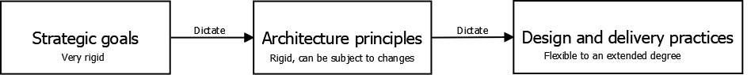

Evolutionary architects¶
Architects of microservices based systems need to face difficult choices:
- Degree of technology unification between microservices
- Team policies (e.g. allow different teams to use different patterns?)
- How to merge/split microservices?
But to provide effective guidance we must first understand the role of software architects in IT.
IT is a young industry that borrowed the architect term from actual architects and engineers but there is a substantial difference in these roles: software is not subject to physical constraints. Software is flexible and can be easily adapted and evolved to new requirements.
Architects need to:
- Set direction in broad strokes (i.e. set software zones), they must be involved in specific implementation details in limited cases
- Ensure that the system is suitable for the current requirements
- Ensure that the system can accommodate future requirements
- Make the system work for both users and developers
- Understand implementation complexity
Tip: an architect should spend some time working on user stories with developers to better understand the state/challenges of the system.
A principled approach¶
There are lots of tradeoffs in decisions about microservices based systems. Defining a set of principles and practices can guide us through these choices.
Principles are rules made by an architect to align the development activity to larger system goals. An example is the 12 factor app, defined by Heroku to guide the development of scalable cloud SaaS applications.
Practices are ways to make sure a principle is followed. Practices can differ when following same principles (e.g. different practices for .NET and Java systems following the same principles).
Principles and practices adopted should depend on goals that we want to achieve, also taking into account strategic goals (i.e. the long term goals of your organization).
This is what happens in the real world:

The required standard¶
One of the core balances to find is how much variability to allow in your system. Too much variability can cause issues such as onboarding problems and other expressed before. One way to identify a standard is to identify the attributes of an ideal microservice.
Zoning¶
Our zones are service boundaries or groups of services. As architects, more important to know how services communicate between each other than how a single isolated service works.
Many organizations are using microservices to make teams more autonomous, architects then rely on those teams to make local optimal decisions. Still, care is needed for choosing the technologies of single services: sparse technology does not facilitate experience growth and makes it harder for developers to switch teams.
Also, care of protocol for communication between microservices, because each ms will need to know how to operate with a certain protocol and this adds complexity.
Monitoring¶
It's important to monitor the health of the whole system and gather health and log data in a single place in order to analyze it. Remember to use an agnostic log/health/data reporting protocol/format so your monitoring system does not change as services change.
Interfaces¶
Keep interfaces of services as simple as possible, supporting the minimum standards required. This makes it easier to handle versioning and system complexity, because it will be easier to evolve the system.
Architectural safety¶
Services need to resist to partial failures in the system. A partial failure should not affect the system as a whole.
Governance through code¶
Making sure that developers are implementing the defined standards can be a burden. Exemplars and service templates help a lot with this problem.
Exemplars should ideally be real-world services following your standards. Developers can safely look at exemplars to further develop the application.
Service templates are a set of technologies or even frameworks to be used in your services. These can guide the developer teams and make their work easier. But be careful: frameworks should not be enforced by an external team and they should be user-friendly. Another danger is that service templates can cause coupling between services.
Technical debt¶
Often the technical vision cannot be fully followed through because of business requirements. This is a source of technical debt because a short-term benefit will be paid with a long-term cost. Teams can manage their technical debt or it can be managed by a centralized source.
Handling exceptions to the rules¶
Sometimes you will need to build a part of your system while not following some rules of the standard you defined. If you find this happening too often, it can make sense to change you rule set.
Summary¶
The following core responsibilities of architects emerged:
- Vision
- Empathy
- Collaboration
- Adaptability
- Team autonomy
- Governance
Architects need to constantly balance aspects of their systems to successfully do their job.